Creator Sign-up Report — 크리에이터 가입·구독 현황과 정산 수수료를 기간별로 확인하는 방법을 처음부터 끝까지 안내합니다.
본 문서의 화면 이미지는 설명을 위한 예시 데이터로 촬영되었습니다. 실제 수치는 계정에 연결된 크리에이터 현황에 따라 다르게 표시됩니다.
순서대로 읽으면 로그인부터 리포트 해석까지 한 번에 익힐 수 있습니다.
이 대시보드가 무엇을 보여주는지, 어떻게 접속하는지 먼저 확인합니다.
AEDI-V Dashboard는 귀사를 통해 유입된 크리에이터가 언제 가입했고, 그중 몇 명이 유료 구독으로 전환했으며, 결제 금액과 그에 따른 수수료(Commission)가 얼마인지를 기간별로 확인하는 리포트 화면입니다. 화면은 Creator Sign-up Report 하나로 구성되어 있습니다.
발급받은 계정으로 접속하고, 사용을 마친 뒤 안전하게 종료합니다.
아래 주소로 접속하면 로그인 화면이 나타납니다.
aedi-v.aedi.ai
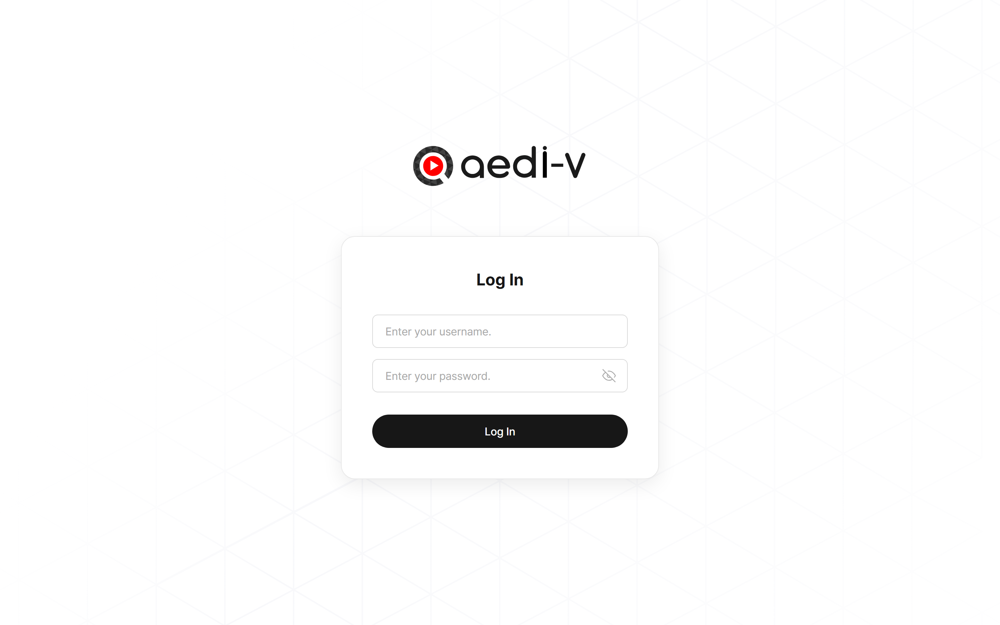
아래 3단계면 리포트 화면으로 이동합니다.
첫 번째 칸(Enter your username.)에 발급받은 아이디를 입력합니다.
두 번째 칸(Enter your password.)에 비밀번호를 입력합니다. 입력한 값은 점으로 가려지며, 칸 오른쪽 눈 모양 아이콘을 누르면 잠시 원문을 확인할 수 있습니다.
검은색 Log In 버튼을 누르면 로그인이 진행되고, 성공 시 곧바로 리포트 화면으로 이동합니다. 처리 중에는 버튼 글자가 Logging In…으로 바뀌며 중복 클릭이 차단됩니다.
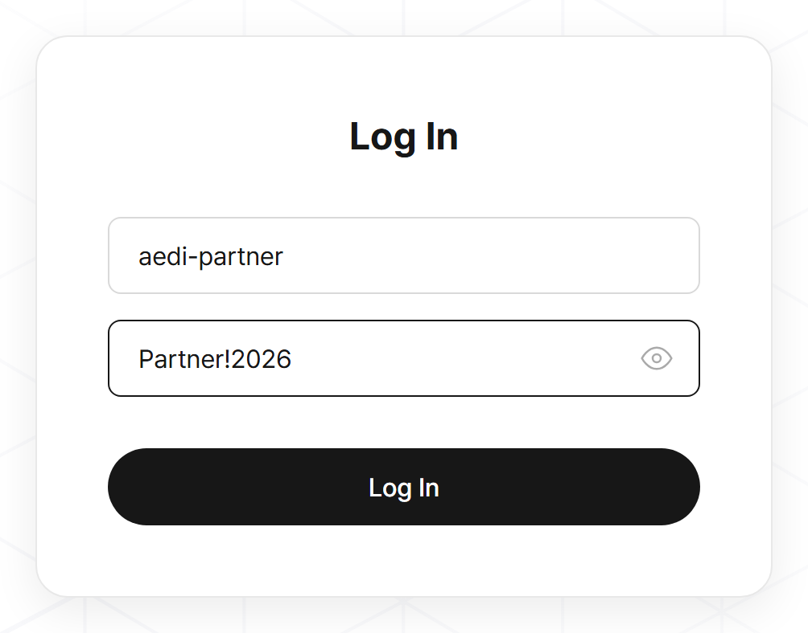
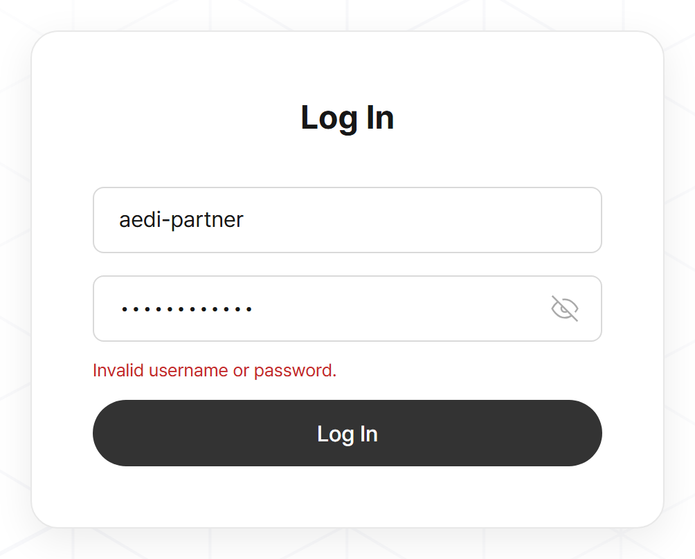
| 화면에 표시되는 메시지 | 뜻과 조치 |
|---|---|
| Invalid username or password. | 아이디 또는 비밀번호가 일치하지 않습니다. 대소문자와 앞뒤 공백을 확인하고 다시 입력하세요. 반복되면 담당자에게 계정 확인을 요청합니다. |
| Unable to log in. Please try again. | 일시적인 네트워크·서버 문제로 요청이 처리되지 않았습니다. 잠시 후 다시 시도하고, 계속되면 담당자에게 알려 주세요. |
사용을 마치면 오른쪽 위 Log Out 버튼을 눌러 로그아웃합니다. 공용 PC에서는 반드시 로그아웃해 주세요.
로그인 후 보이는 화면은 위에서부터 5개 영역으로 나뉩니다.
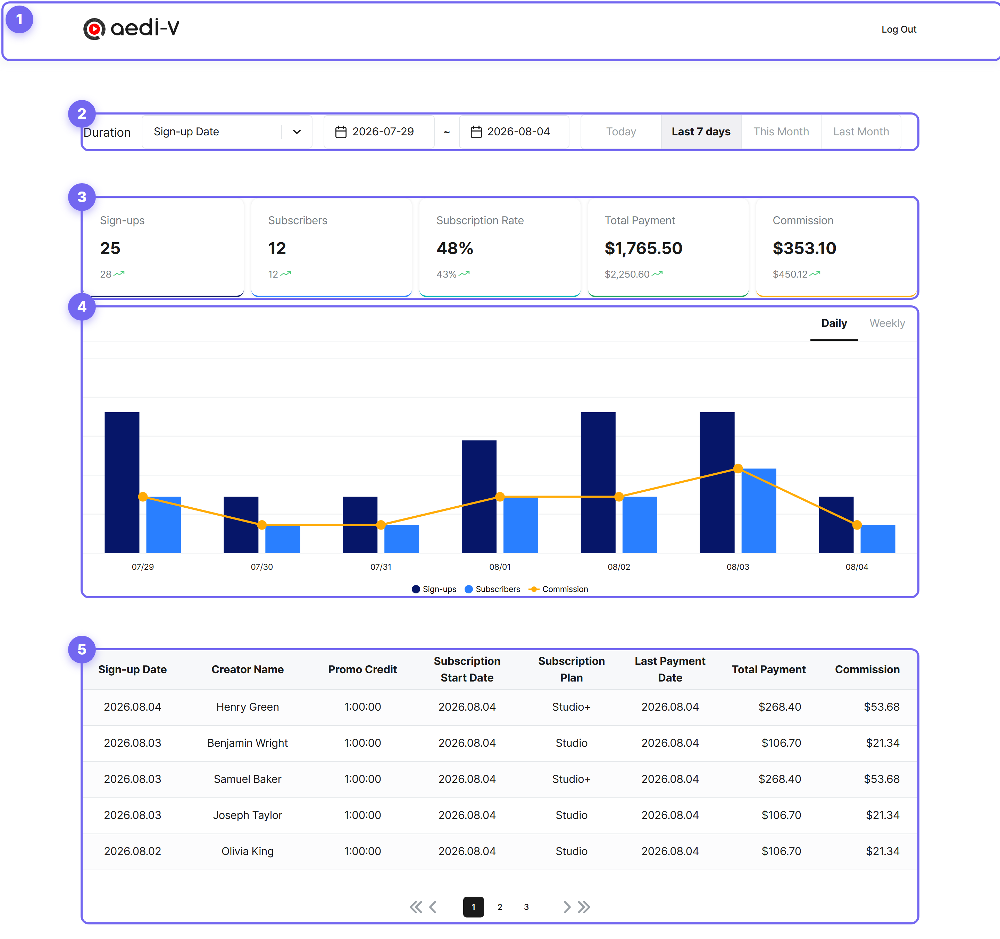
| 번호 | 영역 | 하는 일 |
|---|---|---|
| ① | 헤더 | aedi-v 로고와 Log Out 버튼 |
| ② | Duration (조회 기간) | 어떤 날짜를 기준으로, 어느 기간을 볼지 정합니다. 이 영역을 바꾸면 아래 ③④⑤가 모두 다시 계산됩니다. |
| ③ | 요약 카드 | 선택한 기간의 핵심 수치 5가지를 한 줄로 요약합니다. |
| ④ | 그래프 | 같은 기간을 일별 또는 주별 추이로 보여줍니다. |
| ⑤ | 크리에이터 표 | 구독 중인 크리에이터를 한 명씩 상세하게 보여줍니다. 5명씩 나눠 표시됩니다. |
화면 맨 위 한 줄에서 조회 조건을 모두 정합니다. 왼쪽부터 기준 날짜 → 시작·종료일 → 기간 탭 순서입니다.
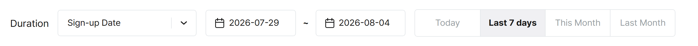
크리에이터 한 명에게는 서로 다른 세 개의 날짜가 있습니다. 가입한 날, 구독을 시작한 날, 마지막으로 결제한 날입니다. 이 중 무엇을 기준으로 기간을 자를지 고르는 것이 이 항목입니다.
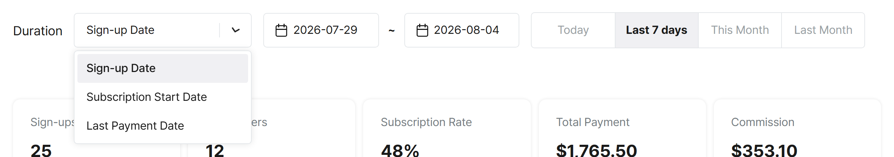
| 선택지 | 기준이 되는 날짜 | 이럴 때 선택합니다 |
|---|---|---|
| Sign-up Date 가입일 기본값 |
크리에이터가 회원가입한 날 | 이번 달 모객 성과를 볼 때. “7월에 몇 명을 데려왔나” |
| Subscription Start Date 구독 시작일 |
무료 사용을 끝내고 유료 구독이 시작된 날 | 실제 전환 시점을 볼 때. “7월에 몇 명이 유료로 넘어갔나” |
| Last Payment Date 최종 결제일 |
가장 최근에 결제가 이루어진 날 | 정산 기준으로 볼 때. “7월에 실제로 들어온 결제는 얼마인가” |
가운데 두 개의 날짜 칸을 클릭하면 달력이 열립니다. 원하는 날짜를 클릭하면 즉시 반영되며, 달력은 Esc를 누르거나 바깥을 클릭하면 닫힙니다.
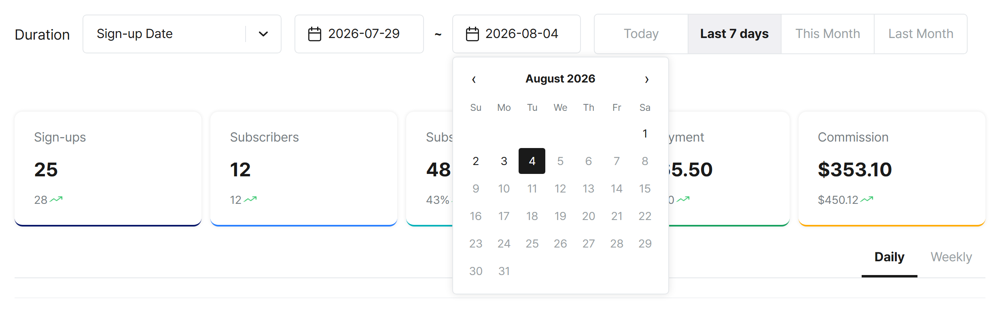
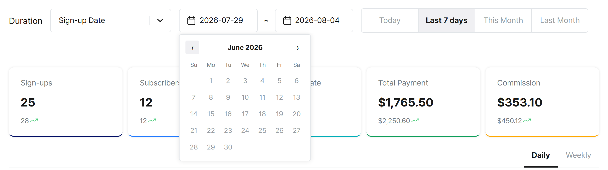
오른쪽 네 개의 탭은 자주 쓰는 기간을 한 번에 설정해 주는 단축 버튼입니다. 누르면 왼쪽 시작·종료일이 자동으로 채워집니다.
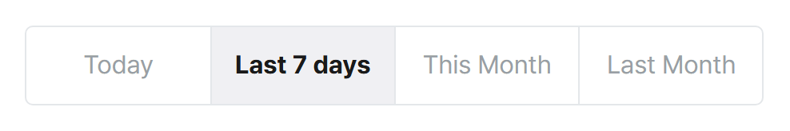
| 탭 | 설정되는 기간 |
|---|---|
| Today | 오늘 하루 |
| Last 7 days 기본값 | 오늘을 포함한 최근 7일 |
| This Month | 이번 달 1일부터 오늘까지 |
| Last Month | 지난달 1일부터 말일까지 |
선택한 기간의 성과를 다섯 개의 숫자로 요약합니다.
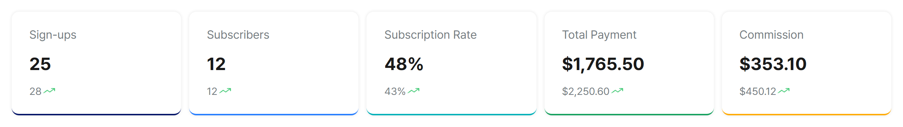
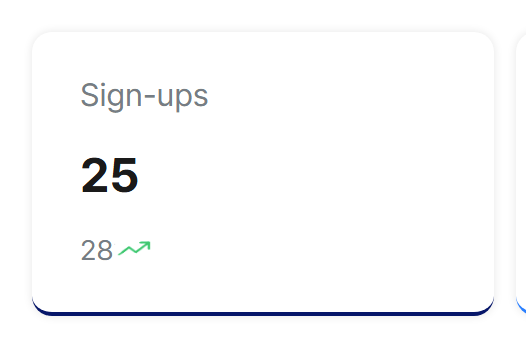
카드 아래쪽의 작은 회색 숫자는 직전 동일 기간의 값입니다. 예를 들어 Last 7 days를 보고 있다면 그 이전 7일의 수치가 표시되어, 지금 기간이 나아졌는지 나빠졌는지 바로 비교할 수 있습니다.
| 지표 | 의미 | 보는 법 |
|---|---|---|
| Sign-ups 가입자 수 |
기간 안에 회원가입한 크리에이터 수 | 모객이 얼마나 이뤄졌는지 |
| Subscribers 구독자 수 |
그중 유료 구독까지 이어진 크리에이터 수 | 아래 표에 나오는 인원과 같은 수 |
| Subscription Rate 구독 전환율 |
Subscribers ÷ Sign-ups를 백분율로 표시 | 모객의 질. 높을수록 좋습니다 |
| Total Payment 총 결제 금액 |
기간 안에 발생한 결제 금액 합계 (USD) | 매출 규모 |
| Commission 수수료 |
총 결제 금액 중 귀사에 배분되는 수수료 (USD) | 실제 정산받을 금액 |
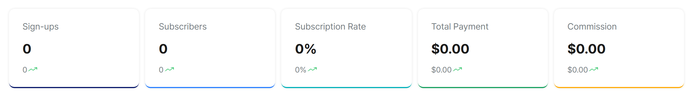
요약 카드와 같은 데이터를 날짜별 추이로 보여줍니다.
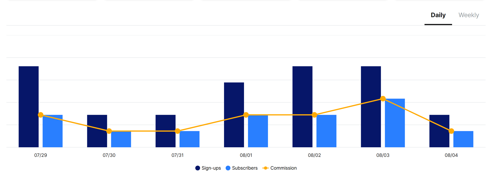
| 탭 | 막대 한 개가 뜻하는 것 |
|---|---|
| Daily 기본값 | 하루. 선택한 기간의 날짜별로 막대가 하나씩 그려집니다. |
| Weekly | 한 주. 같은 기간을 주 단위로 묶어 막대 하나로 표시합니다. 라벨은 그 주의 시작일입니다. |
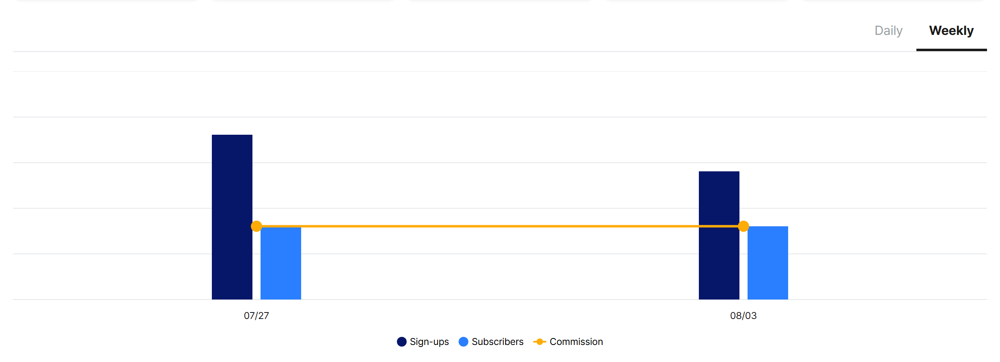
기간을 길게 잡으면 막대 개수가 늘어나면서 막대 폭이 자동으로 얇아지고, 가로축 날짜 라벨도 일정 간격으로 솎아서 표시됩니다. 아래는 한 달을 Daily로 본 예시입니다.
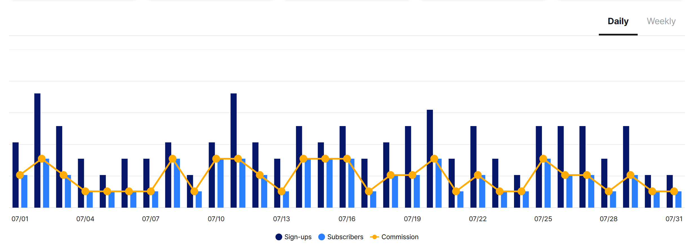
구독 중인 크리에이터를 한 명씩, 8개 항목으로 보여줍니다.
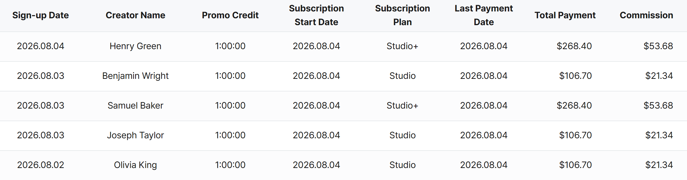
| 항목 | 내용 |
|---|---|
| Sign-up Date 가입일 | 크리에이터가 회원가입한 날짜입니다. |
| Creator Name 크리에이터명 | 가입 시 등록한 이름입니다. |
| Promo Credit 프로모션 크레딧 | 가입 혜택으로 지급된 무료 사용 시간입니다. 시:분:초 형식으로 표시됩니다. |
| Subscription Start Date 구독 시작일 | 유료 구독이 시작된 날짜입니다. |
| Subscription Plan 구독 플랜 | 가입한 요금제입니다. Studio 또는 Studio+로 표시됩니다. |
| Last Payment Date 최종 결제일 | 가장 최근에 결제가 이루어진 날짜입니다. |
| Total Payment 총 결제 금액 | 해당 크리에이터가 결제한 금액입니다. (USD) |
| Commission 수수료 | 그 결제에서 귀사에 배분되는 수수료입니다. (USD) |
표에는 한 번에 5명씩 표시됩니다. 인원이 더 많으면 표 아래 페이지 버튼으로 이동합니다.
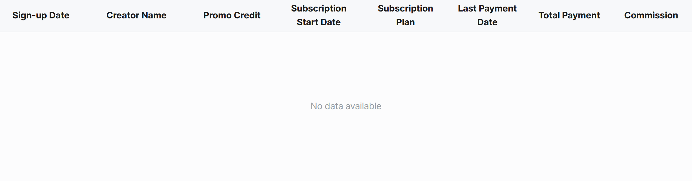
선택한 기간에 구독 중인 크리에이터가 없다는 뜻입니다. 기간을 넓히거나 기준 날짜 필드를 바꿔 다시 조회해 보세요.
수치가 예상과 다를 때 이 순서대로 확인하면 대부분 해결됩니다.
| 이런 경우 | 이렇게 확인하세요 |
|---|---|
| 기간은 맞는데 인원·금액이 예상과 다릅니다. | 가장 흔한 원인은 기준 날짜 필드입니다. 같은 7월이라도 Sign-up Date 기준과 Last Payment Date 기준은 서로 다른 집단을 보여줍니다. (3-1 참고) |
| Sign-ups와 표의 인원 수가 다릅니다. | 정상입니다. Sign-ups는 가입자 전체, 표는 유료 구독까지 완료한 크리에이터만 보여줍니다. 표의 인원은 Subscribers 카드 값과 일치합니다. |
| 달력에서 원하는 날짜가 눌리지 않습니다. | 세 가지 제한이 있습니다 — ① 오늘 이후는 선택 불가, ② 시작일은 종료일을 넘을 수 없음, ③ 조회 가능 시작일보다 앞선 날짜는 선택 불가. (3-2 참고) |
| 화면 전체가 0과 No data available로 나옵니다. | 선택한 기간에 데이터가 없다는 뜻입니다. This Month나 Last Month 탭으로 기간을 넓혀 확인해 보세요. |
| 그래프 중간중간이 비어 있습니다. | 가입·구독이 없었던 날은 막대를 그리지 않습니다. 정상 동작입니다. |
| 갑자기 로그인 화면으로 돌아갔습니다. | 보안을 위해 세션이 만료된 것입니다. 같은 계정으로 다시 로그인하면 됩니다. |
| 표가 잘려 보이거나 가로로 스크롤됩니다. | 브라우저 창이 좁을 때 나타납니다. 창을 최대화하거나 Ctrl+-로 화면 배율을 낮춰 주세요. |